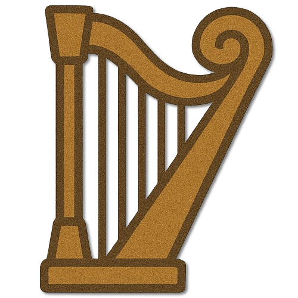
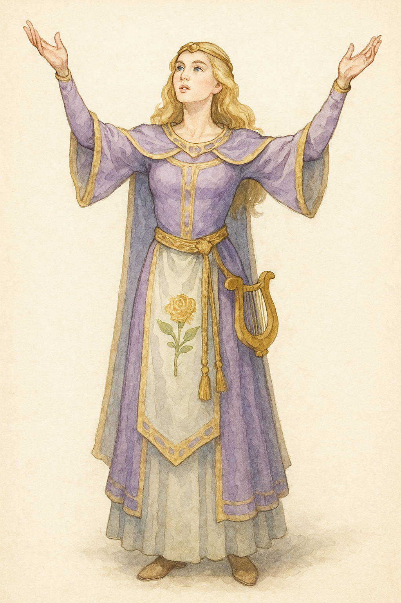
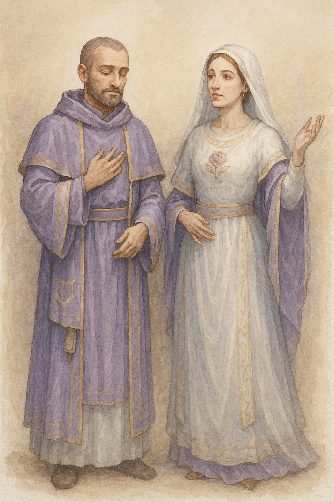
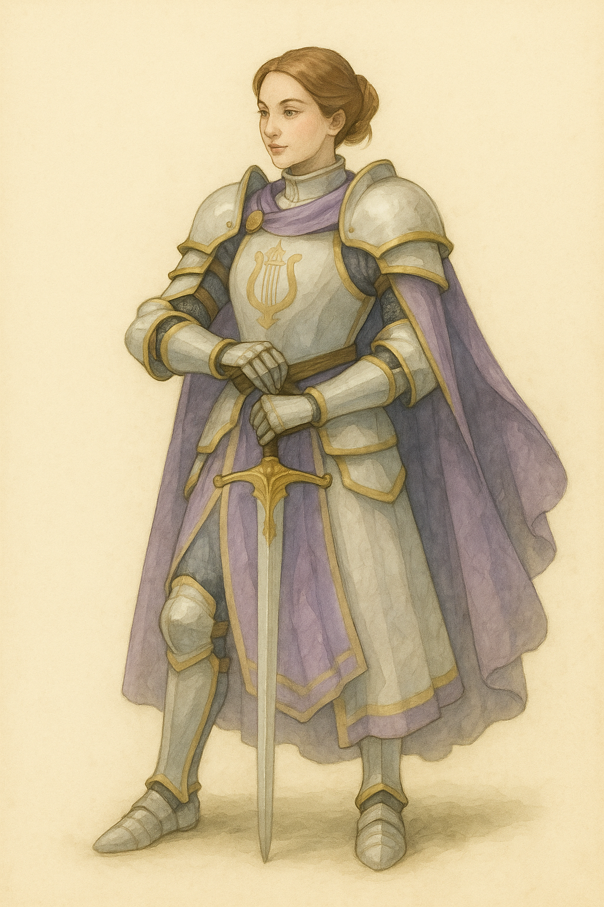
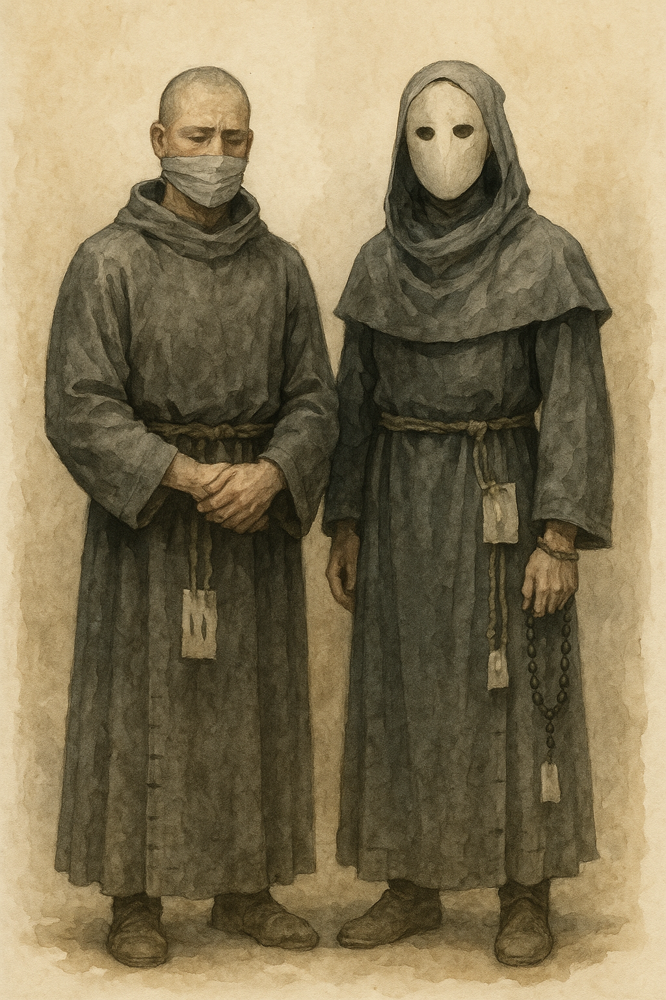

Zunft der Sänger und Notenschreiber
Bewahrt Lieder, kopiert Notenschriften und übt den Gesang des Konvents.
Die Maid · Die Berufungen im Glauben
Lyris' Klerus verbindet Liebe, Fürsorge und schöpferische Hingabe. Ihre Gemeinschaften bewahren Musik, Dichtung und bildende Kunst. Maß und Aufmerksamkeit geben der schöpferischen Kraft eine Form, die andere Menschen erreicht.
Zur Überlieferung von Lyris ↗
Wählt eine Berufung, um ihren Dienst, ihre Lebensform und ihre Ordnung zu erkunden.
I · Den Glauben lehren
Lyris' Priester gestalten gemeinsames Gebet durch Lied, Dichtung und aufmerksame Sprache. Sie begleiten Liebende und Menschen, die ihrer Erfahrung einen Ausdruck geben möchten. Ihr Amt verlangt Fürsorge und Maß; Bewunderung für ein Kunstwerk darf den Menschen hinter dem Werk nicht verdecken.
Priester verkünden die Lehren der Neun Göttlichen, führen religiöse Zeremonien durch und begleiten die Menschen von der Geburt bis zum Tod. Sie sind Ansprechpartner für Seelsorge, Segnungen, Gelübde und die Fragen des gemeinschaftlichen Glaubens.
Ihre Hierarchie trägt die oberste geistliche Ordnung. Hohe Ämter leiten Gemeinden, Bistümer und Landeskirchen; an der Spitze steht der Hierarch. Eine priesterliche Weihe und ein Leitungsamt sind eigene Befugnisse, die mit einer anderen Lebensform verbunden sein können.
Die vierzehn Stufen umfassen Ausbildung, Weihe, Leitung und geistliche Stellung. Laie, Oblat und Novize sind Vorstufen. Das Bischofsamt ist optional; ein Bischof kann zugleich Patriarch sein. Ein Erzbischof besitzt mindestens patriarchale, gegebenenfalls erzpatriarchale Stellung. Diese Titel können sich in einer Person verbinden. Ein Prälat dient in einem hohen Amt ohne eigene örtliche Zuständigkeit. Erzpatriarchen können sowohl Länder als auch große Orden vertreten.
Lebt im Glauben, ohne ein geistliches Amt zu bekleiden.
Bindet sich zunächst an ein kirchliches Haus und erprobt den Dienst.
Erlernt Liturgie, Lehre und gemeinschaftliche Pflichten.
Vertieft die Ausbildung und übernimmt angeleitete Aufgaben.
Unterstützt Liturgie, Fürsorge und Gemeindedienst.
Trägt die Weihe und betreut die Gläubigen; Pfarrer bezeichnet das Gemeindeamt.
Leitet eine Ortskirche und trägt die Verantwortung für deren geistliches Leben.
Leitet eine größere Gemeinde, etwa eine kleinere Stadt mit ihrem Bannkreis. Ihm oder ihr unterstehen zahlreiche Diakone.
Steht über dem Vikar und dient einem Bischof oder Patriarchen in hohen geistlichen Aufgaben. Der Rang ist nicht an einen eigenen Standort gebunden.
Optionales hohes geistliches Amt mit einer Stellung gleich einem Baron. Ein Bischof kann zugleich Patriarch sein.
Koordiniert mehrere Bistümer einer Provinz und steht einem Grafen oder auch Fürsten gleich. Besitzt mindestens patriarchale, gegebenenfalls erzpatriarchale Stellung.
Oberster Geistlicher innerhalb einer feudalen Struktur, etwa einer Grafschaft oder Baronie. Diese Stellung kann mit einem Bischofsamt verbunden sein.
Geistliches Oberhaupt eines Landes, etwa Cenyr oder Aldrimar. Auch ein großer Orden kann innerhalb der priesterlichen Ordnung einen Erzpatriarchen stellen; der Titel setzt keine Landeszugehörigkeit voraus.
Oberhaupt der Alerischen Kirche und höchste Instanz ihrer geistlichen Ordnung.

II · Den Glauben bewahren
Mönche und Nonnen der Maid üben und bewahren die Künste im täglichen Dienst. Ihre Zünfte pflegen Instrumente, kopieren Lieder und gestalten die Räume des Hauses. Die regelmäßige Arbeit soll Können weitergeben und ermöglicht auch unscheinbaren Talenten einen Platz in der Gemeinschaft.
Nur innerhalb der monastischen Gemeinschaft
Bewahrt Lieder, kopiert Notenschriften und übt den Gesang des Konvents.
Pflegt Malerei, Stickerei und die Gestaltung liturgischer Räume.
Erhält die Instrumente des Hauses und vermittelt ihre sorgfältige Pflege.
Mönche und Nonnen ordnen ihr Leben nach den Regeln ihres Konvents. Gebet, Arbeit, gemeinsame Mahlzeiten und die Bewahrung alter Schriften und Bräuche geben dem Tag seine Gestalt. Ihre Gemeinschaft trägt oft den praktischen Alltag einer Kirche.
Nur in dieser Kaste bestehen die hier beschriebenen Zünfte: klösterliche Arbeits- und Lehrgemeinschaften, die etwa Heilkunde, Abschriften, Gartenbau oder Handwerk pflegen. Die Zugehörigkeit zu einer Zunft ersetzt keine Profess und verleiht keine priesterliche Weihe.
Der Weg beginnt bescheiden. Zunftmeister ist ein Fachamt, kein notwendiger Schritt für jedes Mitglied. Ein Prior kann ein kleines Haus selbst führen; einem größeren Kloster steht meist ein Abt vor. Beide können zugleich Priester sein.
Hilft im Haus und lernt den klösterlichen Lebensrhythmus kennen.
Erprobt Regel, Gehorsam und gemeinschaftliches Leben.
Hat die Profess abgelegt und trägt Gebet und regelmäßigen Dienst.
Fachamt: leitet eine monastische Zunft und unterweist ihre Lernenden.
Ordnet den Alltag; führt ein Priorat oder vertritt die Klosterleitung.
Leitet die Abtei und verantwortet Regel, Fürsorge und Zusammenhalt.

III · Den Glauben verteidigen
Die Paladine der Maid schützen Heiligtümer, Reisende und bedrohte Kunstschaffende. Sie bewachen Feiern und begleiten wertvolle Überlieferungen auf ihren Wegen. Ihre Berufung liegt im Schaffen eines sicheren Raumes, in dem Menschen sich ausdrücken können, ohne der Willkür anderer ausgeliefert zu sein.
Paladine verbinden kämpferische Ausbildung mit Glauben, Pflicht und Ehre. Ihr Auftrag reicht von der Begleitung gefährdeter Reisender bis zur Verteidigung eines Heiligtums. Die Art ihres Dienstes folgt dem Wesen der Gottheit, der sie ihren Eid geben.
Ihre Ordnung ähnelt der eines Ritterverbandes. Ausbildung, persönliches Gelübde und militärische Führung greifen ineinander. Ein Kommandant führt seine Truppe; daraus erwächst ihm keine allgemeine Gewalt über Priester, Lehrhäuser oder Klöster.
Knappe und Waffenknecht bezeichnen Ausbildungs- und Dienststufen. Die höheren Führungsämter bestehen je nach Größe des Ordens; eine Dorfkirche mit wenigen Paladinen bildet diese ganze Struktur nicht ab.
Erlernt Umgangsformen, Versorgung und die ersten Grundlagen des Ordensdienstes.
Begleitet einen Ritter und übt Waffenführung und Glaubenspflichten.
Leistet ausgebildeten bewaffneten Dienst vor der vollen ritterlichen Weihe.
Trägt den Eid und dient als selbstständig eingesetzter Verteidiger.
Bewährter Ritter mit Lehr- und Vorbildverantwortung.
Führt eine Schar oder die Wache eines Heiligtums.
Leitet eine Niederlassung und ihre ritterlichen Kräfte.
Koordiniert Ausbildung, Versorgung und größere militärische Einsätze.
Leitet den geistlichen Ritterorden unter der übergeordneten kirchlichen Ordnung.

IV · Den Glauben verkörpern
Einzelne Asketen im Glauben an Lyris üben Haltung, Atem und Bewegung als Formen disziplinierter Hingabe. Ihr Weg bleibt eine seltene Ausnahme. Tanz und Sammlung können die persönliche Übung prägen; eine eigene Asketenordnung gehört gewöhnlich nicht zu den Häusern der Maid. Wer wehrhafte Schulung sucht, kann sie an einem verbundenen Heiligtum erhalten.
Asketen streben nach einer Übereinstimmung von Körper, Geist und Seele. Ihr Weg verbindet geregelte Entbehrung, Meditation und anspruchsvolle Übung. Eine asketische Schule erkennt Hingabe am Lebenswandel ihrer Mitglieder.
Ihre Struktur ist der eines Klosters verwandt, besitzt aber einen wehrhaften Anteil: Körperbeherrschung, Schutz des Heiligtums und gemeinsames Handeln in Gefahr gehören zur Ausbildung. Der Meister des Pfades wahrt Lehre und Disziplin. Ein asketischer Rang ist kein Rang in einem Paladinorden.
Eigene asketische Gemeinschaften finden sich besonders im Glauben an Ordan, Baldran, Maldras, Sylvana und Kharon. Bei den übrigen Gottheiten gibt es keinen oder kaum eigenen asketischen Klerus. Einzelne Gläubige und seltene kleine Gemeinschaften können dennoch einen solchen Weg wählen.
Die höchste Bezeichnung lautet Meister des Pfades. In einem kleinen Heiligtum können Lehr- und Schutzaufgaben in einer Hand liegen; große Schulen verteilen sie auf mehrere Bewährte. Die Stufen beschreiben die Ordnung einer bestehenden asketischen Schule. Sie setzen keinen eigenen Asketenorden bei jeder Gottheit voraus; ein einzelner Gläubiger kann einer verbundenen Schule angehören.
Erprobt die Abgeschiedenheit und den geregelten Verzicht.
Lernt Meditation, Grundübungen und die Regeln der Schule.
Übt selbstständig und nimmt am gemeinschaftlichen Wachdienst teil.
Hat sich im gewählten Pfad bewährt und lebt dessen Disziplin.
Unterweist Lernende und wacht über Maß und Fortschritt ihrer Übungen.
Koordiniert Schutz, Ordnung und gemeinsames Handeln des Heiligtums.
Leitet die Schule und trägt Verantwortung für ihre geistige und körperliche Lehre.
V · Den Glauben verstehen
Magister können Lyris verehren und dessen Tugenden in ihrem Leben folgen. Diesem Gott ist jedoch kein eigener Wissenschaftsbereich gewidmet. Ausbildung, Forschung und akademische Ämter gehören zu den drei Bereichen Orins, Aurons und Oriths.
Ein kirchliches Haus kann solche Lehrenden aufnehmen, mit ihnen zusammenarbeiten oder Unterricht anbieten. Daraus entsteht kein zusätzlicher Fachbereich. Wissenschaftliche Zuordnung und persönliche Glaubenszugehörigkeit bleiben voneinander unabhängig.
Orin · Magisterium
Grundlagen, Naturkunde, Sprache, Geschichte, Recht und die Erforschung der Gesellschaft.
Zum Fachbereich ↗Auron · Magisterium
Baukunst, Mechanik, Werkstoffe, Erfindung und die praktische Anwendung wissenschaftlicher Erkenntnis.
Zum Fachbereich ↗Orith · Magisterium
Magische Erscheinungen, Zauberei, Mystik und die Untersuchung druidischer und anderer arkaner Überlieferungen.
Zum Fachbereich ↗Magister erforschen Geschichte, Theologie, Recht und die Geheimnisse der Schöpfung. Sie bewahren Wissen, prüfen Überlieferungen und unterrichten kommende Generationen. Ihre Arbeit steht im Dienst des Verstehens und folgt vor allem akademischen und schulischen Formen.
Ihre Ordnung unterscheidet Bildungsabschlüsse, Lehrbefähigung und Leitungsämter. An kirchlichen Hochschulen lernen auch Menschen außerhalb des Klerus. Die Bezeichnung Magister als akademischer Grad allein macht einen Menschen ebenso wenig zum Geistlichen wie eine Immatrikulation.
Abschlüsse und Ämter sind keine Weihegrade. Dekan und Rektor sind Leitungsaufgaben, die einem befähigten Lehrenden übertragen werden; Forschung und Lehre bleiben auch ohne diese Ämter vollwertige Wege.
Besucht Unterricht und erwirbt Grundlagen; kann ausdrücklich außerhalb des Klerus stehen.
Hat die Grundlagenprüfung bestanden und vertieft ein Fachgebiet.
Verfügt über einen höheren Abschluss und lehrt oder forscht selbstständig.
Trägt einen regelmäßigen Lehrauftrag und betreut Lernende.
Verantwortet ein Fachgebiet und dessen wissenschaftliche Arbeit.
Leitet eine Fakultät und koordiniert ihre Lehrenden.
Verantwortet die Hochschule als akademische Einrichtung.
VI · Durch den Glauben Erlösung suchen
Bußgänger in Lyris' Häusern übernehmen Dienste, die andere beim Lernen und Schaffen unterstützen. Nach Vernachlässigung oder eigensüchtigem Verhalten kann der Eid besonders die verlässliche Sorge für gemeinsame Räume und Mittel betonen. Das Schweigegelübde lässt die Arbeit selbst für die Bereitschaft zur Umkehr sprechen.
Eid und Schweigegelübde; individuell vereinbarter Dienst innerhalb der Kirche.
Bußgang vollendet, von den Bußpflichten und Gelübden befreit. Rückkehr als freier Mensch in die Gesellschaft.
Ein Bußgänger legt einen Eid und ein Schweigegelübde ab und dient innerhalb einer kirchlichen Struktur. Der Anlass kann eine Verurteilung oder eine freiwillig gesuchte Umkehr sein. Aufgabe, Dauer und Bedingungen des Bußgangs werden mit der aufnehmenden Kirche vereinbart; sie können dem einzelnen Menschen und seiner Schuld angepasst werden.
Mit der anerkannten Vollendung des Bußgangs endet die Verpflichtung. Der Geläuterte muss nicht weiter büßen, ist von den vereinbarten Diensten und Gelübden befreit und kann wieder in die Gesellschaft eingegliedert werden. Seine Vergangenheit begründet keinen Anspruch auf lebenslangen Dienst.
Genau zwei Stände. Die Begleitenden und Geistlichen, welche den Bußgang beaufsichtigen oder abschließen, gehören nicht als zusätzliche Ränge zu dieser Kaste.
An Eid und Schweigegelübde gebunden; erfüllt den individuell vereinbarten Dienst innerhalb einer Kirche.
Hat den Bußgang vollendet; ist von den Bußpflichten befreit und kehrt als freier Mensch in die Gesellschaft zurück.

Das gemeinsame Haus
Ein Haus der Maid kann Kapelle, Singstube, Werkraum und Lehrsaal zugleich sein. Priester begleiten die Gemeinde, monastische Zünfte bewahren die praktische Kunstübung. Gelehrte des Magisteriums lehren dort, ohne einen eigenen Fachbereich der Maid zu bilden. Kleine Schutzgemeinschaften sichern Haus und Reisende.
Kirchliche Gemeinschaften & besondere Häuser ↗